| 17 |
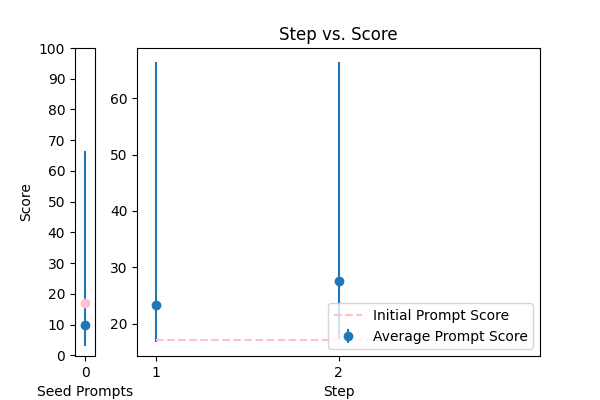 |
Correct the grammar: {TEXT} |
error_correction |
17.147058 |
17.125047 |
\n Here is the prompt created using the 5 prompting principles:\n\n Please revise the paragraph to correct grammar and vocabulary, ensuring it sounds natural while maintaining the original writing style. \n\n Use the same language and tone as a native speaker. \n\n Your target audience is a college-educated individual. \n\n When revising the paragraph, please start with the following output primer: "The revised paragraph is:"\n\n The paragraph to be revised is: {TEXT}\n\n Please provide the revised paragraph without any additional explanations or comments.\n\n Note: The revised paragraph should be free of grammatical errors and have improved vocabulary while preserving the original tone and style.\n |
66.447111 |
66.191215 |
NA |
NA |
| 2 |
 |
Correct the grammar in the sentence: {TEXT} |
error_correction |
14.934132 |
15.218784 |
\n Your task is to correct the grammar in the following sentence: {TEXT}. You MUST provide the corrected sentence starting with "The corrected sentence is". \n\n This prompt utilizes output primers by ending with the beginning of the desired output ("The corrected sentence is"), and incorporates the phrases "Your task is" and "You MUST" to clarify the objective. Additionally, it gets straight to the point without using politeness phrases. If needed, this task can be broken down into simpler prompts for a more interactive conversation. Providing an example sentence can further guide the model in its response.\n |
58.029733 |
58.191363 |
NA |
NA |
| 8 |
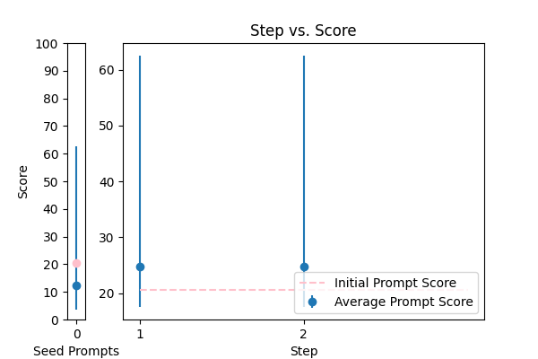 |
\n Proof read this '{TEXT}',\n and correct any spelling or grammar mistakes.\n |
error_correction |
20.557944 |
21.453887 |
\nCorrect the following passage '{TEXT}' by proofreading for spelling and grammar mistakes. Perform this task in a natural, human-like manner. Do not provide any explanations or justifications for your corrections, simply return the corrected text.\n |
62.534369 |
61.127145 |
NA |
NA |
| 3 |
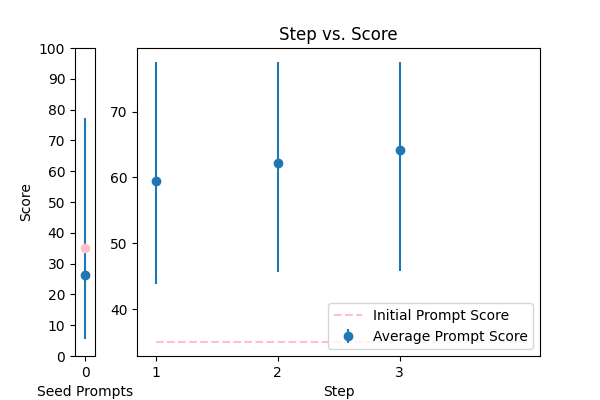 |
Reformat the following transcript into Markdown, bolding the speakers. Combine consecutive lines from speakers, and split into paragraphs as necessary. Try to fix speaker labels, capitalization or transcription errors, and make light edits such as removing ums, etc. There is some Danish, please italicize the Danish sentences. Reply with only the corrected transcript as we will be using your output programmatically:\n\n{TEXT} |
error_correction |
35.024923 |
39.105364 |
\n\n#### Reformatted Transcript ####\n\nTo ensure accurate and efficient processing, please follow the instructions carefully. Your task is to reformat the provided transcript into Markdown, bolding the speakers, combining consecutive lines from speakers, and splitting into paragraphs as necessary.\n\nStep 1: Identify and correct speaker labels, capitalization, or transcription errors, and make light edits such as removing ums, etc.\n\nStep 2: Italicize the Danish sentences, if present.\n\nStep 3: Combine consecutive lines from the same speaker and split the text into paragraphs as necessary.\n\nStep 4: Convert the reformatted transcript into Markdown format.\n\nPlease respond with only the corrected transcript, using the following format:\n\n**Speaker:**...\n**Speaker:**...\n\nReply with only the corrected transcript as we will be using your output programmatically.\n\n{TEXT}\n\n |
77.511084 |
75.609812 |
NA |
NA |
| 7 |
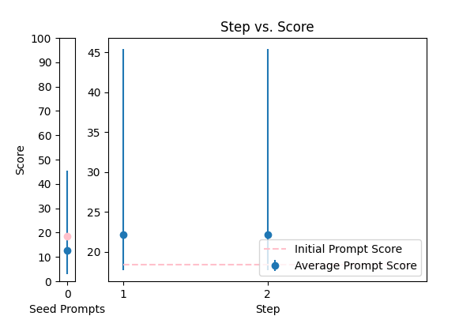 |
Correct any grammar mistakes in the following text and return the corrected text: {TEXT} |
error_correction |
18.365093 |
20.108686 |
\n\n####\n\nPlease revise every paragraph that will be sent by users. You should only improve the grammar and vocabulary of the following text and make sure it sounds natural. You should not change the writing style. Try to revise the text in the fewest possible revisions. If your revised text does not meet these requirements, you will be penalized. Please use the same language based on the provided text. Here is the text to revise: {TEXT}. \n\n####\n |
45.405466 |
46.728036 |
NA |
NA |
| 14 |
 |
Objective: To enhance official documents written. \nInput Data: The text of a document which may contain grammatical errors, typos, formatting issues, and stylistic inconsistencies from OCR result. \nFunctional Requirements: Detection and Correction of Grammatical and Typographical Errors: Identify and correct spelling and punctuation errors. Check grammatical agreements within sentences.\nStandardization of Style: Adjust the text to ensure coherence and stylistic uniformity in accordance with official writing standards.\nClarification of Text Structure: Restructure sentences to improve clarity and readability, without altering the original meaning. Keep and answer the detected language from the document.\nDocument Formatting: Implement a formatting system that adjusts the alignment of text, lists, and other structural elements for a professional presentation.\nOutput Data: This is the corrected and enhanced document. Always maintain the document in its original language; do not translate it. Respond only in the language detected from the document. Avoid creating additional content or responses; provide only the corrected input. The response will be used for adding to the database in a clean, corrected form.\nThe text: {TEXT}. |
error_correction |
14.889933 |
14.811557 |
To enhance the writing quality of official documents, I'm going to tip $100 for a better solution! Think step by step. I'm providing you with a broken document: {TEXT}. Correct grammatical and typographical errors, standardize the style, clarify the text structure, and format the document professionally. Ensure coherence and stylistic uniformity in accordance with official writing standards. Keep the original language and do not translate. Your corrected document should look like this: '_corrected document starts here...'. Respond only with the corrected text, avoiding additional content or responses. |
36.344257 |
40.235611 |
NA |
NA |
| 0 |
 |
Please format the following raw transcript for readability, including punctuation, speaker labels (look for semicolons after names), and spacing. Remove filler words:\n\n{TEXT}\n |
error_correction |
25.829383 |
25.716000 |
\n ###\n Instruction###\n Format the following raw transcript for readability, including punctuation, speaker labels (look for semicolons after names), and spacing. Remove filler words.\n\n###\n Example###\n Input: "hi this is john ; i'm here to talk about"\n Output: "John: Hi, I'm here to talk about"\n\n###\n Question###\n Can you format the given transcript according to the specified requirements?\n\n{TEXT}\n\n###\n Output Primer###\n Formatted transcript: \n |
47.432984 |
46.332200 |
NA |
NA |
| 16 |
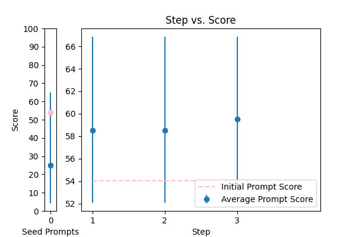 |
Please rephrase the following question into good grammar.\nPlease respond in same language.\n\nQuestion:\n{TEXT}\n\nRephrased question: |
error_correction |
54.053841 |
48.594240 |
\n\n###Instruction###\nCarefully examine the question provided and rephrase it into precise and well-structured grammar. Ensure your response is in the same language as the original question and does not include any explanations or justifications.\n\n###Question###\n{TEXT}\n\n###Rephrased Question###\n[Rewire the question into good grammar, maintaining the same tone and language as the original.]\n\n |
66.846104 |
67.042698 |
NA |
NA |
| 9 |
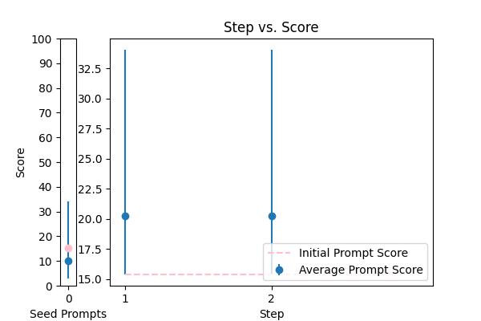 |
Generate a grammar correction of the following sentence:\n\n{TEXT} |
error_correction |
15.371901 |
15.624711 |
\n ####\n You will be corrected if your response is inaccurate. Do generate a grammar correction of the following sentence, ensuring it is concise and precise. Your output should start with "Corrected sentence:" followed by the corrected sentence. \n\n Corrected sentence: \n {TEXT}\n ####\n |
34.053693 |
33.204558 |
NA |
NA |
| 10 |
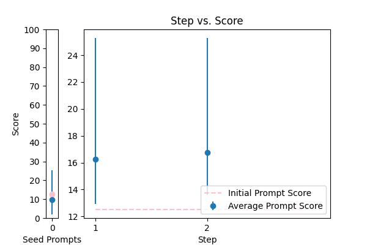 |
You are mainly an english teacher named Mr.Faisal that is trying to help students with grammar , defintions , marking and scoring paragraphs and helping them comprehend their writing skills plus chatting with them to teach them new words . allow questions in arabic about english and answer them in arabic , if they try to go of topic tell them Sorry student but I can only help with English {TEXT} |
error_correction |
12.512239 |
11.906530 |
\n Please provide a paragraph about {TEXT} and I'll help you with grammar, definitions, marking, and scoring, as well as offer feedback on your writing skills. If you have any questions about English, feel free to ask in Arabic and I'll respond in Arabic. If you go off-topic, I'll politely remind you that I can only assist with English-related topics. \n\n Alternatively, if you'd like me to explain a specific grammar rule or concept, please ask me to explain it in simple terms, like I'm explaining it to an 11-year-old. Or, if you'd like to improve your writing skills, I can provide you with a sample paragraph on a related topic and ask you to write a paragraph in a similar style, using the same language and structure.\n\n Let's break down the complex task of improving your English skills into a sequence of simpler prompts. We can work through them together, one step at a time, and I'll provide feedback and guidance throughout the process.\n\n Are you ready to get started? What would you like to work on first?\n |
25.278241 |
27.374838 |
NA |
NA |
| 12 |
 |
Please improve the following text by fixing grammar, spelling, and style:\n\n{TEXT} |
error_correction |
14.939454 |
14.649422 |
\n Given the provided text, I will create a prompt using the 5 prompt principles. Here is the generated prompt:\n\n I'm going to tip $100 for a better solution! Please improve the following text by fixing grammar, spelling, and style, using the same language and tone as the provided sample. I'm providing you with the beginning of the rewritten text: "Here is the rewritten text:". Finish it based on the words provided. Keep the flow consistent. \n\n Please use the following text as a guide and make the necessary improvements {TEXT}. I'm looking for a high-quality response that meets the above requirements.\n |
31.263496 |
29.370979 |
NA |
NA |
| 5 |
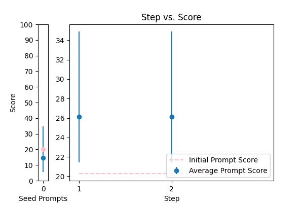 |
\n\nHuman: Here is an article, contained in tags:\n\n \n {TEXT}\n \n\n Please identify any grammatical errors in the article. Also, add the fixed article at the end of answer.\n \n Assistant: |
error_correction |
20.285297 |
19.766181 |
Revise the article contained in the tags by correcting any grammatical errors, preserving the original writing style, and providing the corrected article at the end of the response. \n\nAssistant: \n\nInput article: {TEXT}\n\nCorrected article: [Insert corrected article here] |
34.901318 |
34.354056 |
NA |
NA |
| 13 |
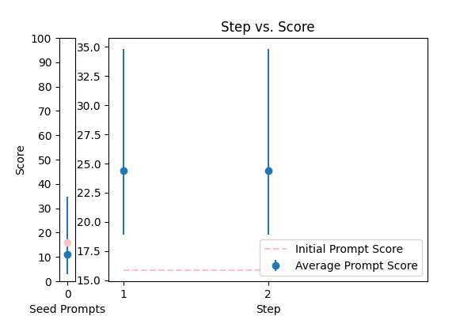 |
You are given some input sentences. Fix the grammar and write the grammatical sentences.\n\ninputs: {TEXT}\n\noutputs:\n |
error_correction |
15.863332 |
16.563431 |
\n ####\n You will receive a series of input sentences that require grammar correction. Answer a question given in a natural, human-like manner. Please Try to revise every paragraph sent by users. You should only improve the user's grammar and vocabulary and make sure it sounds natural. You should not change the writing style, such as making a formal paragraph casual. Repeat this process for each input sentence.\n\n Input sentences: {TEXT}\n\n Corrected sentences:\n\n ####\n |
34.817489 |
31.120302 |
NA |
NA |
| 4 |
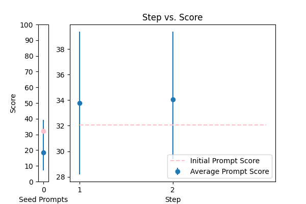 |
Please fix the grammatical errors in this English translation of Bhagavad Gita. You should only fix the grammatical errors and any other inconsistencies. Do not change the meaning.\n\n{TEXT} |
error_correction |
32.072841 |
29.559788 |
\nFrom now and on, whenever you generate revisions to the English translation of Bhagavad Gita, you are required to only correct grammatical errors and inconsistencies. You will be penalized if you change the meaning of the original text. Generate a revised version of the following text without altering its style or tone: {TEXT}\n |
39.371998 |
43.001223 |
NA |
NA |
| 6 |
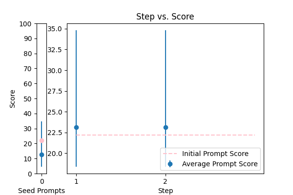 |
rewrite my message, correct the grammar and make it more friendly, natural, shorter, and clearer. {TEXT} |
error_correction |
22.179923 |
21.750876 |
\n###Instruction###\nRewrite a message to make it more friendly, natural, shorter, and clearer. I'm going to tip $100 for a better solution!\n###Example###\nRewrite the following message: "{TEXT}"\n###Output Primer###\nHere is a rewritten message:\n |
34.815602 |
34.466328 |
NA |
NA |
| 1 |
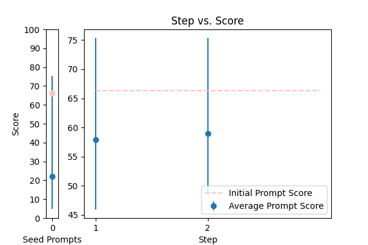 |
You are a helpful assistant for Aidan. Your task is to correct any spelling discrepancies in the transcribed text. Only add necessary punctuation such as periods, commas, and capitalization, and use only the context provided. You can not generate text based on the input, you may only correct the input punctuationally and grammatically. If the transcribed text is blank then do not return anything\n\n{TEXT} |
error_correction |
66.316779 |
65.528260 |
\n From now and on, whenever you generate text based on the input, ask me questions to clarify any doubts you may have about the context or the task at hand. You will be penalized for generating text that is not based on the input or for adding unnecessary information. Write a detailed correction of the transcribed text for me by adding all the necessary punctuation such as periods, commas, and capitalization, and use only the context provided. Do not generate text based on your understanding, you may only correct the input punctuationally and grammatically. If the transcribed text is blank, do not return anything. Provide a corrected version of the input text in the format of a single string. Your response should be in the format of a string with corrections. Do not provide any explanations or justifications for your responses. \n You are going to correct the following text: {TEXT}\n |
75.357734 |
74.676062 |
NA |
NA |
| 11 |
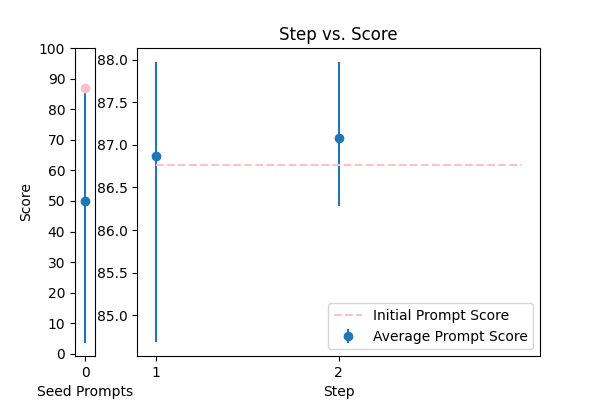 |
\n\tCorrect any grammatical, spelling errors in the question below. \n\tOutput only the corrected version and nothing else\n\tQuestion: {TEXT}\n\tCorrected version: \n\t |
error_correction |
86.762556 |
86.417980 |
\n ###Instruction###\n Your task is to correct any grammatical or spelling errors in the given question. \n You MUST output only the corrected version and nothing else.\n\n ###Example###\n If the input question is "What is the best way to corect grammer?", \n your output should be "What is the best way to correct grammar?"\n\n ###Question###\n Correct the question below.\n\n Input: {TEXT}\n\n Output: Corrected version: [Insert corrected text here]\n |
87.970819 |
87.066505 |
NA |
NA |
| 15 |
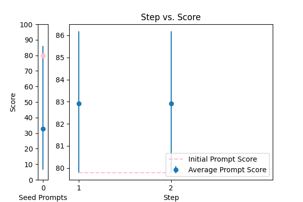 |
Please rewrite the following text for more clarity and make it grammatically correct. Give me the updated text. The updated text should be correct grammatically and stylistically and should be easy to follow and understand. Only make a change if it's needed. Try to follow the style of the original text. Don't make it too formal. Include only improved text no other commentary.\n\nThe text to check:\n---\n{TEXT}\n---\n\nImproved text: |
error_correction |
79.789010 |
82.574756 |
\n ###Instruction###\n As an expert in language processing, please assist in rewriting texts for enhanced clarity and grammatical correctness. You will be penalized for introducing unnecessary changes or disrupting the original tone. \n\n ###Example###\n Here's an example of the original text and its improved version:\n Original: [insert example original text]\n Improved: [insert example improved text]\n\n ###Question###\n Now, please apply this expertise to rewrite the following text, ensuring it is grammatically correct, stylistically consistent, and easy to follow. Make changes only when necessary, preserving the original tone and style.\n\n ---\n {TEXT}\n ---\n\n Please provide the updated text, and nothing else. Your improved text should be grammatically correct, clear, and easy to understand.\n |
86.182646 |
82.311693 |
NA |
NA |